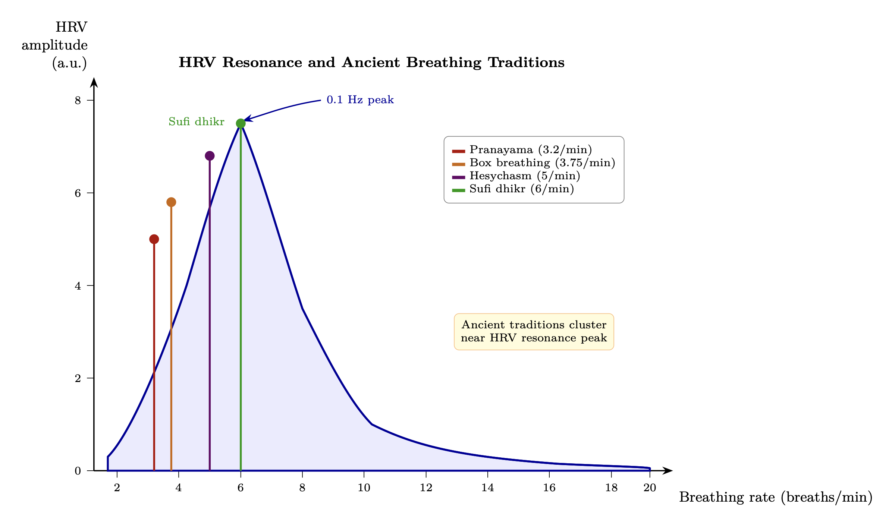

Chapter 15: Paradigm Shielding and Disclosure Architecture
Spectrum Denial Architecture: Passive Attenuation, Active Jamming, and the Necessary Veil
KEY FINDINGS — Chapter 15: Paradigm Shielding and Disclosure Architecture
Evidence-tier key: see front matter for [L1]–[L4] definitions.
- Institutional gatekeeping in science is well-documented (Kuhn 1962/2012, Fanelli 2010, Peters & Ceci 1982, Ioannidis 2005); the claim that this functions as a Faraday cage against consciousness-related research is the model’s contribution [L1-L2: documented effect sizes applied to novel framework; Kuhn’s canonical epistemology now explicitly grounding the model]
- Career destruction cases show paradigm-selective suppression: the same researcher’s work is celebrated when paradigm-consistent and destroyed when paradigm-threatening (Becker 1990, Sheldrake 2012 TEDx censorship) [L1-L2: documented public record]
- Combined passive + active suppression estimated at 50-138 dB, with career risk and classification as strongest individual layers [L2-L3: order-of-magnitude analogical estimates grounded in measured effect sizes]
- Hemispheric lateralization (McGilchrist 2009) provides a neurological substrate for the paradigm cage: left-brain dominance narrows cognitive bandwidth to match the paradigm’s complexity ceiling [L2: neuroimaging data, Yale UP]
- The S/J ratio for UAP disclosure has risen from <0.01 (pre-2004) to ~0.5-1.0 (2023-2025), approaching parity; disclosure functions as a managed revelation system with religious-transmission dynamics (Pasulka 2019) [L1-L2: based on documented disclosure events, congressional testimony, and OUP social-science analysis]
- Occam’s Razor is applied asymmetrically: \(10^{500}\) unobservable string landscapes accepted without parsimony objections while single additional fields are rejected [L1: verifiable claim about scientific practice]
- The critical coherence fraction of ~283,000 high-\(Z_0\) individuals could trigger threshold disclosure effects [L2-L3: derived from phased array mathematics]
_________________________________
15.1 RF Analogy Overview
15.1.1 The Core Concept
A Faraday cage is a conductive enclosure that blocks external electromagnetic fields. Signals that would otherwise propagate freely are attenuated or completely blocked. The cage does not destroy the signal; it prevents it from reaching receivers inside.
Scientific materialism is a Faraday cage around collective consciousness. The signal – evidence of deeper realities, ancient civilizations, consciousness as fundamental, non-human intelligence – continues to propagate. But the paradigmatic cage blocks these signals from mainstream awareness.
In electronic warfare, jamming deliberately transmits interference to disrupt enemy communications. Effective jamming is architected: not random noise but designed interference with redundant layers and need-to-know partitioning.
The suppression architecture operates on both principles simultaneously. Passive shielding (paradigm cage) attenuates incoming signals without active effort. Active jamming (classification, disinformation, coordinated suppression) deliberately injects interference to maintain information dominance. The two form a layered defense-in-depth against paradigm-threatening information.
Audio bridge. The paradigm cage operates like sound insulation — but inverted. Where a recording studio’s isolation keeps external noise out so the engineer hears only the source signal, the paradigm cage keeps the source signal out so the population hears only the controlled narrative. The multi-layer attenuation (education + media + peer pressure + institutional authority) mirrors how studio walls achieve high Sound Transmission Class (STC) ratings: each layer adds independent dB of attenuation. Active jamming (Section 15.3) is the cocktail party problem — raising the ambient noise floor until individual voices become indistinguishable.
15.1.2 Rayleigh vs. Ricean Fading
Rayleigh fading: No line-of-sight path; only scattered reflections arriving with random phase.
Ricean fading: A dominant direct path exists alongside reflections.
The materialist paradigm enforces Rayleigh conditions by design. Knowledge is fragmented into siloed disciplines. Research is atomized into narrow studies. Findings are locked behind paywalls, scattered across journals. Each domain has its own jargon and gatekeepers.
Result: No direct line-of-sight to integrated truth. Information arrives only as scattered reflections with random phase, unable to coherently combine.
_________________________________
15.2 Passive Attenuation Model
15.2.1 Shielding Effectiveness
Faraday cage attenuation: \[ SE = 20 \log _{10}\left (\frac {E_{outside}}{E_{inside}}\right ) \text { dB} \] For the paradigm cage: \[ L_{paradigm} = L_{education} + L_{media} + L_{peer} + L_{institutional} \] Each layer adds attenuation.
- Constancy-of-Laws Assumption: The axiom that physical constants and governing equations are identical everywhere and everywhen is a foundational shielding layer. By ruling out a priori any density-dependent variation in coupling constants, consciousness-modulated field strengths, or epoch-dependent torsion parameters, this assumption renders the entire RF framework unfalsifiable-by-definition rather than merely unproven. It is the most effective form of paradigm shielding, because it appears to be a requirement of science itself rather than a cultural choice.
15.2.1.1 Archetypal Attenuation: Symbolic Carrier Suppression The paradigm cage equation above omits a layer that operates below conscious awareness, at the level of myth and archetype. The Proto-Indo-European dragon-slaying motif (Indra/Vrtra, Thor/Jormungandr, Zeus/Typhon, Apollo/Python, Marduk/Tiamat) is symbolic carrier suppression: the hero (sky-law transmitter) “kills” the dragon/serpent (earth-resonant carrier signal), relabeling the carrier as chaos requiring destruction.
Adding this archetypal layer to the paradigm cage: \[ L_{paradigm} = L_{education} + L_{media} + L_{peer} + L_{institutional} + L_{archetypal} \] Where \(L_{archetypal}\) operates at the deepest psychological level, embedded in foundational myth, below conscious evaluation. It attenuates serpent-gnosis signals before they reach the matched filter stage, ensuring \(|\rho _{template}| \to 0\) (Section 15.2.6) even for practitioners who bypass institutional layers.
The inversion mechanism: Pre-conquest, serpent = carrier of gnosis (positive symbol aiding signal detection). Post-conquest, serpent = chaos/evil (negative symbol triggering rejection). The signal is unchanged; the matched filter template has been corrupted to reject what it should accept. This is the deepest instance of filter mistuning described in Section 15.2.6, operating at the mythological substrate where cultural identity is formed. The post-conquest claiming of the dragon symbol by ruling lineages—the conqueror absorbing the killed carrier’s identity—is analyzed in Chapter 14, Section 14.2.1.2 as carrier frequency hijacking.
Epistemic note [L1-L2]: The existence of institutional gatekeeping in science is well-documented (Kuhn, 2012; Fanelli, Peters & Ceci). Kuhn’s The Structure of Scientific Revolutions (University of Chicago Press, 1962/2012) provides the canonical epistemological framework: anomaly suppression during “normal science,” paradigm incommensurability, and the crisis dynamics preceding scientific revolutions. The Faraday cage model operationalizes Kuhn’s qualitative framework in quantitative RF terms – the paradigm cage is the engineering realization of Kuhn’s observation that anomalies are not merely ignored but structurally invisible within the reigning paradigm. The specific claim that this gatekeeping functions as a Faraday cage against consciousness-related research is the model’s contribution. [L1: canonical philosophy of science]
15.2.2 Scan Blindness
In phased arrays, certain scan angles become “blind” due to impedance mismatch. The array structurally cannot look in those directions.
For paradigm: \[ \theta _{blind} = \arccos \left (\frac {\lambda _{paradigm}}{d_{assumption}}\right ) \] Certain topics (psi, ancient advanced civilizations, consciousness as fundamental) are structural blind spots. The paradigm cannot perceive them without self-destruction.
15.2.2a Metamaterial Band-Gap Blocking
In RF engineering, a metamaterial is an engineered structure whose sub-wavelength periodicity produces bulk electromagnetic properties not found in any natural material. The defining feature is the band gap: a range of frequencies where propagation is not merely attenuated but forbidden. Unlike broadband Faraday shielding (Section 15.2.1), which reduces all signals by some \(SE\) value, a metamaterial bandgap is frequency-selective. Signals outside the gap propagate freely; signals inside it cannot exist in the structure regardless of power level.
The key point is that the periodicity of the structure, not its material composition, determines which frequencies are blocked. Two metamaterials made from identical raw materials but different geometries will forbid entirely different frequency bands:
\[ f_{gap} = f\!\left (\Lambda ,\; \epsilon _{eff},\; \mu _{eff}\right ) \]
where \(\Lambda \) is the structural period and \(\epsilon _{eff}\), \(\mu _{eff}\) are the effective permittivity and permeability, which can be negative, zero, or otherwise impossible in natural materials.
Audio bridge. Phononic crystals — the acoustic analogue of electromagnetic metamaterials — create acoustic band gaps: frequency ranges where sound literally cannot propagate through the structure. Lab demonstrations of acoustic cloaking route sound around an object so it emerges undistorted on the far side, as though the object were not there. Mechanical metamaterials extend the principle further: auxetic lattices with negative Poisson’s ratio, structures with negative effective mass at certain frequencies, and programmable-stiffness architectures whose properties change on command. None of these properties exist in any natural material. They emerge entirely from sub-wavelength geometry — how the parts are arranged, not what they are made of.
Consciousness mapping. When paradigm structures are organized at scales below the “operating wavelength” of ordinary perception (institutional norms, educational curricula, media framing, funding criteria), they produce emergent bulk properties that no single component possesses. The result is topic band gaps: frequency-selective blackout bands where certain categories of ideas cannot propagate regardless of signal strength. A researcher can have unlimited funding, impeccable credentials, and airtight data; if the topic falls inside the paradigm’s forbidden band, the information does not propagate. It is not attenuated; it is structurally forbidden.
This is qualitatively different from the broadband Faraday shielding of Section 15.2.1:
|
Property | Classical Faraday (§15.2.1) | Metamaterial Band-Gap (§15.2.2a) |
|
Suppression type | Broadband attenuation | Frequency-selective forbidden bands |
|
Mechanism | Material conductivity | Sub-wavelength structural periodicity |
|
Selectivity | All signals reduced | Only in-band signals blocked |
|
Key parameter | \(SE\) (dB) | \(f_{gap}\) (forbidden frequency range) |
|
Paradigm analogue | General institutional inertia | Topic-specific blackout architecture |
The paradigm cage uses both mechanisms simultaneously. Broadband attenuation (career risk, funding denial, ridicule) raises the noise floor against all heterodox inquiry. Metamaterial-style band gaps create absolute blackout zones around specific topics (consciousness as fundamental, torsion-field biology, ancient high civilizations) where no amount of signal power produces propagation.
Adding the metamaterial contribution to the paradigm cage equation:
\[ L_{paradigm} = L_{education} + L_{media} + L_{peer} + L_{institutional} + L_{archetypal} + L_{metamaterial} \]
where \(L_{metamaterial}\) is the frequency-selective forbidden-band contribution. Unlike the other terms, which add finite dB of attenuation, \(L_{metamaterial} \to \infty \) inside the forbidden band. This is not a matter of degree but of kind. Topics inside the band gap face not resistance but impossibility of propagation within the structure.
Exotic suppression does not require exotic substance. The band gap arises from specific structural organization at fine scales – how review panels are composed, how curricula are sequenced, how funding priorities interlock – producing bulk properties that appear impossible from examining any single component. The paradigm cage is architecturally engineered, not materially special.
Metamaterial Consciousness Architecture: From Blocking to Building (\(\relax \to \) Ch 6 §6.2.10) Section 15.2.2a describes metamaterials in their suppressive role: band-gap blocking. But metamaterial engineering is equally capable of enabling exotic propagation modes. A metamaterial can support modes no natural material allows:
- Negative group velocity: Information propagating against the apparent flow direction. In consciousness terms, precognitive or retrocausal perception where effects are perceived before causes.
- Evanescent field concentration: Modes that would normally decay exponentially are instead concentrated and amplified at specific locations (superlensing). In consciousness terms, practices that bring normally-inaccessible density information into focused, usable perception at the practitioner’s location.
- Cloaking: Signals routed around an object so it becomes invisible to that frequency. In consciousness terms, selective transparency to specific information types while remaining invisible to surveillance at those frequencies.
Practices as consciousness metamaterial construction. Chapter 6 §6.2.10 establishes that consciousness has mode shapes, spatial structure at each frequency. Contemplative and somatic practices that reorganize neural, somatic, and energetic patterns at fine scales are building a consciousness metamaterial:
- Yoga/tai chi: Reorganize somatic patterns at the sub-wavelength scale of body awareness. New bulk properties emerge (flexibility, energy flow, interoceptive acuity) not present in untrained tissue.
- Meditation: Reorganize neural firing patterns at fine temporal and spatial scales. New cognitive modes emerge (sustained attention, equanimity under stress, panoramic awareness).
- Breathwork: Modulate the autonomic nervous system’s periodicity. New resonant conditions arise for modes that require specific physiological oscillation patterns.
Architecture maintenance. Unlike natural materials whose properties are intrinsic, metamaterial properties depend on the precise sub-wavelength structure. If the structure degrades, the exotic modes vanish. This maps directly to the universal teaching across contemplative traditions that practice must be maintained: not because the practitioner “loses” what they gained, but because the metamaterial architecture requires active upkeep. Periods without practice allow the fine-scale structure to relax toward its natural (non-metamaterial) configuration, and the exotic modes it supported become evanescent again.
Counter-jamming application. The metamaterial framework provides a constructive counterpart to the paradigm cage analysis. Where Section 15.2.2a describes how institutional metamaterials create forbidden bands, this section describes how individual practice creates permitted bands, exotic modes that bypass the institutional blocking architecture entirely. The paradigm cage operates at the social/institutional scale; the consciousness metamaterial operates at the individual/somatic scale. Same physics, different scales, opposite intent. This constructive branch depends directly on the distributed mode library introduced in Chapter 6 §6.2.10 and scales upward into the sacred-site cavity infrastructure discussed in Chapter 13. Cross-ref to Chapter 16 (Counter-Jamming) for the strategic implications.
Epistemic note [L3]: Metamaterial physics is established RF/photonics engineering [L1]. The mapping to consciousness practices is analogical [L3]. The specific claims about negative group velocity corresponding to precognition and evanescent concentration corresponding to superlensing are suggestive structural parallels, not empirical identifications.
15.2.3 Rayleigh Fading Model
Received signal in Rayleigh conditions: \[ r = \sqrt {X^2 + Y^2} \] Where X, Y are Gaussian random variables. The signal fluctuates wildly; coherent reception is impossible.
In the knowledge environment: Each piece of information arrives from scattered sources with random phase. No coherent integration occurs. The pattern exists but cannot be perceived.
15.2.4 Disclosure Firewall
Active filtering coefficient: \[ \alpha _{firewall} = \frac {\text {Information blocked}}{\text {Information attempted}} \] Mechanisms: classification, ridicule, career destruction, debunking, funding denial.
15.2.5 Quarantine Thinning
The cage is weakening over time: \[ SE(t) = SE_0 \cdot e^{-t/\tau _{decay}} \] Based on the observed disclosure acceleration from 2004-2025, a rough estimate gives \(\tau _{decay} \approx 15\)–\(30\) years.
As more signals leak through, the paradigm cage thins.
15.2.6 Occam’s Razor as Mistuned Matched Filter
A matched filter maximizes signal-to-noise ratio by correlating the received signal against a known template \(h(t)\). The output SNR is: \[ \text {SNR}_{MF} = \frac {2E}{N_0} \] where \(E\) is signal energy. This is provably optimal when the template matches the true signal. When the template is mistuned, the filter output degrades as: \[ \text {SNR}_{mistuned} = \text {SNR}_{MF} \cdot |\rho |^2 \] where \(\rho = \int h_{template}(t) \, h_{true}^*(t) \, dt\) is the cross-correlation between the assumed and actual signal templates, with \(|\rho | \leq 1\).
Occam’s Razor, properly applied, is a matched filter tuned to the simplest hypothesis that explains the data. Among competing hypotheses with equal explanatory power, it selects the one with fewer free parameters: an efficient search strategy.
Occam’s Razor abused is a matched filter permanently tuned to “simple materialist explanation,” regardless of the actual signal. When reality is genuinely multi-causal, nonlocal, or consciousness-involving, the template mismatch drives \(|\rho | \to 0\):
- The filter passes noise that happens to look simple (spurious “debunkings” matching the simplicity template)
- The filter rejects the true signal because it doesn’t correlate with the template
- The more complex the truth, the worse the filter performs
This can also be modeled as a complexity ceiling, a low-pass filter on explanation complexity: \[ H(\omega ) = \begin {cases} 1 & \text {complexity} < \omega _c \\ 0 & \text {complexity} \geq \omega _c \end {cases} \] where \(\omega _c\) is the paradigm’s maximum tolerable explanatory complexity. Any structure in reality above \(\omega _c\) is destroyed: the filter does not merely miss it, it actively removes it from the received signal.
Legitimate vs. Abused Occam’s Razor
|
Property | Legitimate Form | Abused Form |
|
Selection criterion | Among hypotheses that equally explain the data | Among all hypotheses regardless of fit |
|
Complexity role | Tiebreaker when explanatory power is equal | A priori rejection threshold |
|
Template | Adaptive—updated as evidence accumulates | Fixed—tuned to materialist simplicity |
|
Effect on SNR | Improves (selects most efficient explanation) | Degrades (rejects true signal when complex) |
|
Analogy | Properly tuned matched filter | Mistuned matched filter |
Self-reinforcing feedback: The mistuned filter narrows what is studied, narrower study confirms the narrow worldview, and the filter tightens further. This positive feedback loop progressively reduces \(\omega _c\): \[ \frac {d\omega _c}{dt} = -\gamma \cdot (\omega _c - \omega _{paradigm}) \] where \(\gamma > 0\) and \(\omega _{paradigm}\) is the paradigm’s preferred complexity level. The cutoff frequency converges exponentially toward the paradigm baseline, progressively excluding more of reality.

_________________________________
15.3 Active Jamming Model
15.3.1 Jamming Equation
Signal-to-Jamming ratio: \[ \frac {S}{J} = \frac {P_s G_s}{P_j G_j} \cdot \left (\frac {R_j}{R_s}\right )^2 \] Where:
- \(P_s, G_s\) = signal power and gain (truth sources)
- \(P_j, G_j\) = jammer power and gain (disinfo sources)
- \(R_s, R_j\) = distances
The jammer wins when \(S/J < 1\).
15.3.1a Formal J/S and Burn-Through Range (Adamy) Adamy (EW 101, 2001, Ch 9, pp. 182–191) provides the standard EW formalism for the jamming-to-signal ratio in communications jamming:
\[ J/S = ERP_J - ERP_S + 20\log _{10}\!\left (\frac {d_S}{d_J}\right ) + G_{RJ} - G_R \quad \text {(dB)} \]
where \(ERP_J\) is the jammer’s effective radiated power, \(ERP_S\) is the desired transmitter’s ERP, \(d_S\) and \(d_J\) are the distances from the desired transmitter and jammer to the receiver respectively, \(G_{RJ}\) is the receiving antenna gain toward the jammer, and \(G_R\) is the gain toward the desired signal.
In the paradigm shielding context, the “receiver” is any individual or institution evaluating truth claims:
|
J/S Parameter | Paradigm Shielding Mapping |
|
\(ERP_J\) | Institutional messaging power (funding, media reach, credential authority) |
|
\(ERP_S\) | Truth signal power (evidence quality, source credibility, emotional resonance) |
|
\(d_S\) | Conceptual distance: how many paradigm boundaries the truth must cross |
|
\(d_J\) | Proximity of jammer to receiver: how embedded the control narrative is in the receiver’s daily environment |
|
\(G_{RJ}\) | Receiver’s openness to control narrative (cultural alignment, trust in institutions) |
|
\(G_R\) | Receiver’s openness to truth signal (curiosity, sovereignty, prior exposure) |
Burn-through range is the distance at which the truth signal overcomes jamming and the receiver can function effectively (Adamy, EW 101, 2001, Ch 9.3, p. 187). In radar, this is derived by rearranging the J/S equation and solving for \(D_T\) when \(J/S\) falls to the minimum required for effective jamming. In the paradigm shielding context:
\[ R_{BT} \propto \sqrt {\frac {ERP_J \cdot G_J}{ERP_S \cdot G_S} \cdot \frac {1}{(J/S)_{required}}} \]
Burn-through occurs at the paradigm cage boundary: the point where accumulated evidence, direct experience, or community support raises \(ERP_S\) (or lowers \(d_S\)) enough that \(S/J > 1\). This predicts that disclosure events cluster at the cage boundary, not uniformly — individuals break through when their accumulated signal strength just exceeds the local jamming environment, creating a thin shell of breakthrough rather than a gradual gradient.
Prediction (P-BT): If burn-through dynamics govern disclosure, newly awakened individuals should cluster in a narrow band of exposure/evidence level rather than being uniformly distributed across the population’s information spectrum. This is testable against survey data on belief-change triggers. [L2-L3]
15.3.2 Compartmentalization
Information is partitioned into cells with no cross-communication: \[ I_{total} = \bigcup _{i=1}^{N} I_i \quad \text {where} \quad I_i \cap I_j = \emptyset \] Compromise of cell \(i\) reveals only \(I_i\); full picture requires all \(N\) cells.
Effective compartments: \(N > 100\) in deep-black programs.
15.3.3 Jamming Mode Taxonomy
Adamy (EW 101, 2001, Ch 9, pp. 177–196) classifies jamming into distinct modes, each with different power requirements, effectiveness profiles, and countermeasures. The following table maps these modes to paradigm shielding:
|
Jamming Mode | RF Definition (Adamy) | Paradigm Analog | Power Requirement | Key Vulnerability |
|
Broadband noise | Uniform power across entire bandwidth | Saturation disinformation across all topics | \(N \times \) spot power (must cover full BW) | Concentrated truth signal in any one band defeats it locally |
|
Spot jamming | Full power on single known frequency | Targeted suppression of specific topic (e.g., UAP, psi) | Minimum power for maximum local effect | Frequency hopping (topic diversity) evades it |
|
Swept jamming | Power swept across bandwidth over time | Rolling media focus: suppress each emerging topic in sequence | Moderate; trades dwell time for coverage | Multiple simultaneous disclosures overwhelm sweep rate |
|
Deceptive jamming | False targets inserted alongside real signal | Controlled opposition, limited hangouts, absurd associations | Very low — requires only enough power to be credible | Matched-filter discrimination (Section 15.2.6); high-\(Q\) receivers reject deceptive signals |
The critical engineering insight from Adamy: broadband jamming requires \(N\) times more power than spot jamming, where \(N\) is the ratio of total bandwidth to spot bandwidth. This means that a concentrated truth signal in a single topic area can achieve local \(S/J > 1\) even against a jammer with far greater total power, because the jammer must spread its energy across the full information spectrum while the truth signal concentrates on one frequency.
Disinformation operates as broadband noise across the information spectrum: \[ N_{disinfo}(f) = N_0 \quad \forall f \in [f_{min}, f_{max}] \] This raises the noise floor across all topics, making any specific truth harder to distinguish.
15.3.4 Deceptive Jamming
Insert false targets (controlled opposition, fake whistleblowers, absurd claims): \[ s_{received} = s_{truth} + \sum _k a_k s_{deceptive,k} + n \] The receiver cannot distinguish truth from deception without additional information.
Epistemic note [L2-L3]: Deceptive jamming detection risks unfalsifiability — any contrary evidence can be reinterpreted as jamming. This limitation is acknowledged in the Part V Spectrum Operations Review.
15.3.5 Counter-Counter Measures
The architecture adapts to counter-jamming (disclosure efforts): \[ \frac {dJ}{dt} = \alpha \cdot C - \beta \cdot J \] Where \(C\) = counter-jamming intensity, \(\alpha \) = adaptation rate.
FOIA requests, whistleblower protections, and congressional hearings trigger adaptive responses: new classification, new debunking, new ridicule.
_________________________________
EMSO doctrine. Paradigm shielding operates as both noise jamming (raising the noise floor so the signal cannot be detected) and deceptive jamming (inserting false targets so the signal is misidentified) — EA per Adamy (EW 101, 2001, Ch 9). The institutional architecture of Chapter 15 implements both modes simultaneously — a sophisticated electronic attack posture that most targets cannot distinguish from the natural environment.
_________________________________
15.4 Predictions
Passive Shielding Predictions:
P1: Paradigm-threatening research should face disproportionate barriers. [L2]
P2: Cross-disciplinary synthesis should be actively discouraged. [L2]
P3: Breakthrough perceptions should cluster outside institutional environments. [L2-L3]
P4: The cage should show signs of weakening (more anomalies reaching mainstream). [L2]
P5: Individuals inside the cage should be unaware of what they are not receiving. [L2-L3]
P5a: Metamaterial-style paradigm blocking should produce topic-specific suppression patterns distinguishable from general institutional inertia — certain subjects should show near-total propagation failure independent of evidence quality, while adjacent topics with comparable evidence levels but outside the forbidden band propagate normally. [L3]
Active Jamming Predictions:
P6: Secrecy architecture should show designed compartmentalization. [L2]
P7: Disclosure attempts should trigger adaptive countermeasures. [L2]
P8: Noise floor should increase around genuine revelations. [L2-L3]
P9: Deceptive signals should outnumber truth signals. [L3]
P10: The system should have redundancy — defeating one layer reveals another. [L2-L3]
Combined Predictions:
P11: Passive and active suppression should correlate — topics with strongest paradigm shielding should also receive the most active jamming. [L2-L3]
P12: Cage weakening (\(SE(t)\) decline) should trigger compensatory jamming increases (\(dJ/dt > 0\)), observable as intensified debunking campaigns following disclosure events. [L2-L3]
P13: The combined system should show diminishing returns — as passive shielding thins, active jamming costs should escalate nonlinearly. [L3]
P14: Occam’s Razor should be invoked asymmetrically — applied strictly against paradigm-challenging hypotheses but relaxed for paradigm-consistent ones. [L2]
_________________________________
15.5 Evidence: Passive Shielding
15.5.1 Archaeology Suppression Cases
Out-of-Place Artifacts (OOPARTS)
Virginia City skull (1866) [L3-L4] — A human skull found in Miocene stratum was quietly archived rather than investigated. The institutional response — silent suppression rather than active debunking — exemplifies the lowest-energy shielding strategy: simply not engaging with paradigm-threatening evidence. (Full entry in Appendix B §D.12.4)
Hueyatlaco site, Mexico [L3] — Stone tools dated to 250,000+ years by geologist Virginia Steen-McIntyre, whose career was destroyed for publishing the results. This case is the paradigm cage’s strongest single exemplar: peer-reviewed dating methodology, replicated measurements, and career destruction as the institutional response. (Full entry in Appendix B §D.12.4)
Dorchester vessel (1851) [L3-L4] — A metal vase found embedded in 600 million year old rock was dismissed as a hoax without investigation. The dismissal-without-investigation pattern recurs across OOPARTS cases, functioning as the matched filter’s automatic rejection of signals outside the expected frequency band (Section 15.2.6). (Full entry in Appendix B §D.12.4)
The pattern — anomalous finds either ignored, attributed to hoax, or career-destroying — is documented systematically below.
Cremo and Thompson (1993) [L3]
- Documented 100+ cases of evidence contradicting human evolution timeline
- Evidence: Archaeological finds systematically filtered if they don’t fit paradigm
“Knowledge filter”
- Anomalies not published, not taught, forgotten
Career Examples
|
Researcher | Finding | Career Consequence |
|
Virginia Steen-McIntyre | Hueyatlaco dating | Denied tenure, blacklisted |
|
Michael Cremo | Anomalous human origins | Labeled pseudoscientist |
|
Robert Schoch | Sphinx water erosion | Marginalized in Egyptology |
15.5.2 Journal Publication Bias Studies
Quantified Bias
Fanelli (2010)
- Positive results published at 3x rate of negative; rate increasing over time
- In dB terms: a 3x publication ratio corresponds to ~5 dB systematic attenuation of negative/anomalous results
Open Science Collaboration (2015) [L1] — Only 36% of psychology studies replicated, establishing that the majority of published findings in a major scientific discipline are unreliable. This L1 datum transforms the paradigm cage from a theoretical model into a measured phenomenon: the system’s output is demonstrably corrupted. (Full entry in Appendix B §D.12.4)
Begley (2012) [L1] — Only 6 of 53 “landmark” cancer studies proved reproducible, extending the replication crisis from psychology into biomedicine. The 89% failure rate in high-impact cancer research shows the filtering dysfunction operates in life-or-death domains, not just abstract science. (Full entry in Appendix B §D.12.4)
Fabrication and Fraud Growth
- 2024 meta-analysis of ~75,000 biomedical studies: an estimated 14% contain partially fabricated data (Bordewijk et al., Anaesthesia)
- Northwestern University analysis (2025): fraudulent science publications growing faster than legitimate research output, with retraction rates accelerating
- These findings strengthen the replication crisis evidence: when ~14% of published work may be fabricated, the paradigm’s filtering function is actively degraded
Gatekeeping Mechanisms
- 1.
- Peer review anonymity: Reviewers can block without accountability
- 2.
- Citation metrics: Journals reject paradigm-challenging papers (reduce impact factor)
- 3.
- Funding requirements: Papers must align with funded research agendas
- 4.
- Retraction asymmetry: Anomalous findings retracted faster than fraudulent mainstream findings
Impact on Paradigm-Challenging Research
| Field | Paradigm Challenge | Publication Difficulty |
| Consciousness | Psi phenomena | Major journals refuse to review |
| Medicine | Homeopathy, energy healing | Dismissed a priori |
| Physics | Cold fusion, overunity | Career suicide to pursue |
| Archaeology | Alternative chronology | Not peer reviewed |
15.5.3 Academic Career Destruction Cases
Pattern Analysis
-
Scientists crossing paradigm boundaries face:
- 1.
- Ridicule from colleagues
- 2.
- Funding denial
- 3.
- Publication rejection
- 4.
- Career termination
Documented Cases
|
Name | Field | Transgression | Consequence |
|
Rupert Sheldrake | Biology | Morphic resonance | Nature editorial calling for book burning |
|
Jacques Benveniste | Immunology | Water memory | Nature “investigation,” career ended |
|
John Mack | Psychiatry | Alien abduction research | Harvard investigation (vindicated) |
|
Peter Duesberg | Virology | Questioned HIV-AIDS link | Funding terminated, ostracized |
|
Brian Josephson | Physics | Interest in psi | Nobel laureate publicly mocked |
|
Robert O. Becker | Orthopedic surgery / bioelectromagnetics | DC body electric, electromedicine | Funding cut, marginalized after second Nobel nomination |
Becker Case Study [L1-L2]
Becker (1990), Cross Currents: The Perils of Electropollution, The Promise of Electromedicine (Jeremy P. Tarcher / Penguin), documents the paradigm cage from inside. Becker’s DC electrical control systems in living organisms – semiconducting protein pathways, measurable with standard instrumentation – led to FDA-approved clinical electromedicine (bone growth stimulation via external electrical fields). Despite two Nobel Prize nominations and reproducible clinical results, Becker’s broader bioelectromagnetics program was systematically defunded after he publicly challenged the safety of power-line electromagnetic fields. The suppression followed the standard paradigm-shielding sequence: initial recognition (Nobel nominations), boundary transgression (challenging industrial EM safety), and career destruction (funding termination, institutional marginalization). Becker’s case is particularly diagnostic because the same researcher’s work was celebrated when paradigm-consistent (bone healing) and suppressed when paradigm-threatening (environmental EM bioeffects) – the matched filter (Section 15.2.6) passing and rejecting signals from the same source based solely on paradigm correlation. [L1-L2: FDA-approved clinical data; career destruction documented]
IIT Pseudoscience Letter (2023)
- 124 academics signed open letter calling Integrated Information Theory “pseudoscience” (published in response to IIT proponents’ work; covered by Nature)
- IIT is a leading mathematical theory of consciousness. The open letter contained both substantive scientific criticisms of IIT’s axioms and broader paradigm-boundary enforcement; the latter component shows active enforcement in consciousness research
Sheldrake TEDx Censorship [L1-L2]
Sheldrake (2012), The Science Delusion: Freeing the Spirit of Enquiry (Coronet / Hodder), argues that scientific materialism functions as a belief system suppressing anomalous findings – ten foundational dogmas (constants are constant, consciousness is epiphenomenal, etc.) that are assumed rather than tested. The book’s epistemological thesis aligns directly with the mistuned matched filter model (Section 15.2.6). More significant as paradigm-shielding evidence is the response: Sheldrake’s 2013 TEDx talk was removed from the main TED platform after an anonymous complaint from self-described “science bloggers,” despite the talk presenting published data on speed-of-light variations and changing gravitational constants. TED’s Scientific Advisory Board initially recommended removal, then retreated to a “quarantined” page after public backlash. The incident is a real-time case study of the adaptive countermeasures model (\(dJ/dt = \alpha C - \beta J\), Section 15.3.5): the disclosure attempt (\(C\), the talk) triggered proportional institutional response (\(J\), removal and quarantine), with the response intensity calibrated to minimize controversy while maximizing signal attenuation. [L1: the censorship event is documented public record; L2: the interpretation as paradigm shielding is the model’s contribution]
Shielding Effect
- Most researchers self-censor (don’t even attempt paradigm-crossing work)
- Survivors are unusually determined outliers
- The career destruction cases are exemplary punishment, suppressing far more research than the individual cases suggest
15.5.4 Peer Review Gatekeeping Research
Sokal (1996) [L1] — Submitted a deliberately nonsensical paper to a postmodern journal; it was accepted and published. This demonstrates that peer review can pass signals with zero information content if they correlate with the paradigm template, the definition of a mistuned matched filter. (Full entry in Appendix B §D.12.4)
Ioannidis (2005) [L1] — “Why Most Published Research Findings Are False” established through statistical modeling that the majority of published findings are likely incorrect due to bias, low power, and flexibility in analysis. This foundational paper reframes the replication crisis as a systemic property of the publication system, not an anomaly. (Full entry in Appendix B §D.12.4)
Mahoney (1977) [L1-L2] — Reviewers rated identical methodology as higher quality when results confirmed their expectations, providing direct experimental evidence for confirmation bias in peer review. This is the matched filter operating in real time: same signal, different correlation with the template, different pass/reject decision. (Full entry in Appendix B §D.12.4)
Tomkins et al. (2017) [L1-L2] — Double-blind review reduces bias by 25%, quantifying the magnitude of the identity-based filtering effect. The 25% bias reduction under blinding implies that at least 25% of non-blinded review decisions are influenced by factors orthogonal to scientific quality. (Full entry in Appendix B §D.12.4)
The entries below retain quantitative interpretive context.
Inter-Reviewer Agreement
- Meta-analysis of 45 studies on peer review reliability: average inter-reviewer correlation \(r = 0.34\) (Bornmann, Mutz & Daniel, 2010)
- An \(r = 0.34\) is barely above chance, meaning reviewer decisions are substantially random
- When the gatekeeping filter operates near the noise floor, decisions are biased toward paradigm-confirming work: ambiguous quality assessments default to “reject” for anomalous findings and “accept” for paradigm-consistent work
Measured Bias
- Peters and Ceci (1982) [L1-L2] Resubmitted already-published papers to same journals under unknown names; 8 of 9 rejected. In dB terms: 89% rejection rate corresponds to ~10 dB attenuation based on institutional affiliation alone. This is the single strongest quantitative datum for paradigm-cage filtering — the same content, same quality, different institutional signal, and the matched filter rejects it.
15.5.5 Academic Self-Censorship
FIRE 2024 Faculty Survey (Foundation for Individual Rights and Expression; 6,269 faculty across 55 U.S. institutions):
- 25% of faculty self-censor in their published research
- 15% avoid researching certain topics entirely
- 33% self-censor in classroom lectures
In dB terms: if 25% of researchers suppress their findings, the effective signal power reaching publication is attenuated by \(10\log _{10}(1/0.75) \approx 1.2\) dB from self-censorship alone, before any peer review or editorial filtering.
Times Higher Education 2024 (global survey):
- 68% of academics worldwide report self-censoring to some degree
- 80% in the United States
Significance: These surveys quantify what the chapter otherwise only asserts, that “most researchers self-censor.” The attenuation is passive (no external agent acts), making self-censorship the innermost layer of the paradigm cage: the shield the individual builds around their own transmission.
15.5.6 Hemispheric Lateralization as Cognitive Substrate
The paradigm cage requires a cognitive substrate – a reason why the human receiver is susceptible to paradigm shielding in the first place. McGilchrist (2009), The Master and His Emissary: The Divided Brain and the Making of the Western World (Yale University Press), provides a neuroimaging-grounded account. McGilchrist (Consultant Psychiatrist, Bethlem Royal and Maudsley; neuroimaging research at Johns Hopkins and Oxford) documents that the left hemisphere (narrow-focus, analytical, categorizing, controlling) has progressively dominated Western civilization’s cognitive style at the expense of the right hemisphere (holistic, connective, experiential, contextual).
The hemispheric asymmetry maps directly onto the paradigm cage mechanism:
- Left-hemisphere dominance narrows the cognitive bandwidth to match the paradigm’s \(\omega _c\) cutoff (Section 15.2.6) – only analytical, decomposable, materially reducible signals pass
- Right-hemisphere suppression attenuates precisely the integrative, holistic, pattern-perceiving modes that would detect cross-domain coherence in the consciousness signal
- Historical trajectory: McGilchrist traces left-brain ascendancy through Western cultural history (ancient Greece through the Enlightenment to modernity), mapping onto the progressive tightening of the paradigm cage’s complexity ceiling over centuries
The significance for the paradigm cage model is that the shielding is not only institutional but is also instantiated at the neurological level of individual receivers. Education, media, and career incentives reinforce the left-hemisphere cognitive style, which in turn makes the individual’s internal matched filter reject right-hemisphere-dependent signals (holistic pattern recognition, nonlocal perception, integrative synthesis). The cage is built from the outside (institutional layers) and from the inside (cognitive lateralization). Cross-ref: Chapter 11 (injection locking) analyzes the cultural mechanisms by which left-hemisphere dominance is reinforced; Chapter 14 maps the historical trajectory. [L2: neuroimaging data published Yale UP; civilizational analysis is historical-interpretive]
15.5.7 Occam’s Razor Asymmetry in Practice
The complexity ceiling model (Section 15.2.6) predicts that Occam’s Razor should operate as selective paradigm protection rather than uniform methodology. Examination of mainstream physics reveals a clear asymmetry:
Paradigm-consistent ontological additions (accepted):
- Dark matter: An unobserved entity constituting ~27% of the universe, invoked to explain galactic rotation curves. No direct detection despite decades of experiments (LUX, XENON, PandaX). Ontological cost: an entire class of undetected particles
- Dark energy: An unobserved entity constituting ~68% of the universe, invoked to explain accelerating expansion. No theoretical explanation from first principles. Ontological cost: 95% of the universe is invisible and undetected
- String theory: Requires 6-7 extra spatial dimensions (unobservable), predicts \(\sim 10^{500}\) possible vacuum states (the “landscape”), and has produced no testable prediction in 50 years. Ontological cost: effectively infinite unobservable structure
- Many-worlds interpretation: Postulates an infinite number of unobservable branching universes created at every quantum measurement. Ontological cost: literally infinite unobservable universes
Paradigm-challenging ontological additions (rejected as “violating parsimony”):
- Consciousness as fundamental: A single additional ontological category. Rejected for “multiplying entities”
- Torsion field coupling: A single additional field interaction predicted by Einstein-Cartan theory. Rejected for “no known mechanism”
- Nonlocal biological information: A single additional information channel. Rejected for “violating known physics”
- Ancient advanced civilizations: A single historical revision. Rejected because “simpler explanations exist” (even when simpler explanations don’t fit the data)
The asymmetry is quantifiable. Mainstream physics accepts \(10^{500}\) unobservable landscapes and infinite unobservable universes without “parsimony” objections, while rejecting a single additional field or ontological category as excessive. This is not parsimony. It is a mistuned matched filter passing signals that correlate with the materialist template while rejecting signals that do not, regardless of relative ontological cost.
This selective enforcement confirms P14 and shows that Occam’s Razor, as practiced, is paradigm shielding rather than neutral methodology.
_________________________________
15.6 Evidence: Active Jamming
15.6.1 Whistleblower Testimony Patterns
Evidence lane. The material below moves from documented secrecy and counter-intelligence history into higher-inference interpretations about active jamming. Read the institutional record as the lower-tier substrate; the adversarial signal-warfare mapping is the model extension built on top of it.
UAP/UFO Whistleblowers
|
Whistleblower | Position | Key Claims | Corroboration |
|
David Fravor | Navy pilot | 2004 Nimitz encounter | Radar data, multiple witnesses |
|
Luis Elizondo | AATIP director | AATIP / AAWSAP ($22M DIA program via BAASS) | Program documentation released |
|
David Grusch | Intelligence officer | Crash retrieval programs | Congressional testimony under oath |
|
Eric Davis | Astrophysicist, AAWSAP author | Authored 6 DIRDs; May 2025 Rayburn briefing: recovered craft “not of this Earth” | TS/SCI clearance; Wilson-Davis memo entered into Congressional Record (Gallagher, 2022) |
|
Bob Lazar | Claimed S-4 employee | Reverse engineering (1989) | Employment records disputed |
Consistency Analysis
-
Multiple independent sources describe:
- Multi-decade recovery/reverse engineering programs
- Compartmentalized access (need-to-know beyond Top Secret)
- Intimidation of witnesses
- Disinformation campaigns to discredit leakers
Jamming Architecture Signature
- Immediate debunking attempts upon disclosure
- Character assassination of whistleblowers
- “Neither confirm nor deny” official responses
- Controlled partial disclosure (limited hangouts)
Interpretation
- Multiple independent whistleblowers describing the same compartmentalized structure confirms P6 (designed compartmentalization)
- The pattern of immediate debunking + character attacks is the adaptive countermeasure predicted by \(dJ/dt = \alpha C - \beta J\) (Section 15.3.5): disclosure attempts (\(C\)) trigger proportional jamming response (\(J\))
- The S/J ratio for whistleblower signals remains < 1 because \(P_j G_j >> P_s G_s\): institutional jammer power vastly exceeds individual signal power
15.6.2 FOIA Response Analysis
Response Pattern Studies
| Request Type | Typical Response | Wait Time |
| Mundane records | Release with redactions | 30-90 days |
| UAP-related | Glomar response or denial | 6+ months |
| Mind control programs | Heavy redaction | 1-5 years |
| Exotic technology | “No records” or classification cite | Indefinite |
Glomar Response
- “Neither confirm nor deny existence of records”
- Originally for submarine program (Glomar Explorer)
- Now standard response for paradigm-sensitive requests
Black Vault Analysis (Greenewald)
- John Greenewald: 3+ million pages released through FOIA over 25+ years
-
Patterns observed:
- Critical documents heavily redacted
- “Missing” documents for key periods
- Different agencies give contradictory responses
- Appeal success rate much higher than initial denial (system counts on requester giving up)
Interpretation
- FOIA response patterns match broadband noise jamming (Section 15.3.3): the noise floor \(N_{disinfo}(f) = N_0\) is raised uniformly across topics through redaction, delay, and Glomar responses
- Contradictory inter-agency responses work as deceptive jamming (Section 15.3.4): \(s_{received} = s_{truth} + \sum _k a_k s_{deceptive,k}\). The receiver cannot distinguish truth from bureaucratic noise without extraordinary effort
- The appeal success pattern reveals a deliberate S/J strategy: initial denial counts on low \(P_s\) (requester giving up), making the effective jammer power much higher than the formal classification would suggest
15.6.3 Black Budget and Classification
Black Budget Programs
FY2023 intelligence budget
- $90+ billion (disclosed portion)
Black programs
- Estimated 2-3x disclosed budget
Classification expansion
- Exponential growth in classified documents since 1945
Disclosed vs. Estimated
| Category | Disclosed (2023) | Estimated Hidden |
| Intelligence | $90.8 billion | Unknown |
| Special Access Programs | Classified | Est. $50-100B |
| Unacknowledged SAPs | Classified | Est. $20-50B |
| Private contractor black | Not public | Est. $50B+ |
Audit Trail
- DOD failed audit for 6 consecutive years (2018-2023)
- $35 trillion unaccounted in HUD + DOD adjustments (Skidmore & Fitts, 2019)
- Catherine Austin Fitts (former HUD official) documenting persistent financial anomalies
Compartmentalization Structure
- SAPs: Special Access Programs (acknowledged)
- USAPs: Unacknowledged SAPs (denied)
- Waived USAPs: Congressional oversight excluded
- Estimated 10-50 compartments for deepest programs
The compartmentalization may extend beyond secrecy into engineering architecture itself. Sticco (2025) documents six propulsion subsystems (MHD drives, superconductor magnets, fusion reactors, gravity-coupling materials, metamaterials, spacetime metric engineering) funded separately across DARPA, ARPA-E, Navy, and private contractors: a “disaggregated machine” where no single program integrates the full system, and each component has a plausible conventional cover story. This architecture maximizes the effective compartment count \(N\) by distributing integration knowledge across organizational boundaries.
Cook (2002), The Hunt for Zero Point: Inside the Classified World of Antigravity Technology (Broadway Books), provides corroborating journalism from inside the defense establishment. Cook, as aviation editor of Jane’s Defence Weekly (the premier open-source military intelligence publication), documented T. Townsend Brown’s electrogravitics research and its absorption into classified programs. Cook’s investigation traced gravity-control research from Brown’s 1920s-50s demonstrations through to classified Air Force and defense contractor programs, finding a consistent pattern: initial open publication, military interest, classification, and subsequent public denial that the research ever existed. The trajectory maps onto the paradigm cage’s quarantine thinning model (Section 15.2.5): information that was once openly published (\(SE \approx 0\)) was progressively enclosed behind classification layers (\(SE \to \) maximum), with each decade adding attenuation. Cook’s credentialing as Jane’s editor makes this an [L3] investigative source with institutional credibility above typical alternative-science journalism.
Historical Suppression Examples
|
Program | Years Hidden | What Was Classified | Suppression Duration |
|
Manhattan Project | 3 years | Nuclear weapons | Short (wartime secrecy) |
|
Philadelphia Experiment (1943) | 80+ years | Degaussing/EM field effects on crew | Indefinite (never declassified) |
|
MKULTRA (1953-1973) | 20+ years | Mind control, consciousness modification | Partial (documents destroyed 1973; surviving records released 1977) |
|
COINTELPRO | 15+ years | Domestic surveillance | Full (Church Committee 1975) |
|
Montauk (1971-1983, alleged) | 40+ years | Psychic amplification, timeline research | Indefinite (no official acknowledgment) |
|
STARGATE | 23 years | Remote viewing research | Full (declassified 1995) |
|
Advanced Aerospace Threat ID | 5+ years | UAP investigations | Partial (ongoing) |
|
Electrogravitics (1950s-present) | 70+ years | Gravity-control propulsion (Brown, et al.) | Indefinite (Cook 2002 documents classification trajectory) |
Disclosure Resistance
- FOIA requests routinely denied on “national security” grounds
- Whistleblowers prosecuted (Snowden, Assange, Manning)
- Classification as tool for paradigm protection, not just security
Interpretation
- The compartmentalization structure directly instantiates the information partitioning equation: \(I_{total} = \bigcup _{i=1}^{N} I_i\) where \(I_i \cap I_j = \emptyset \) (Section 15.3.2)
- With \(N > 100\) effective compartments, compromise of any single cell reveals only \(I_i / I_{total}\), a vanishingly small fraction of the full picture
- Audit failures and unaccounted funds are the financial infrastructure required to maintain \(P_j G_j >> P_s G_s\): the jammer must be funded to maintain power advantage over truth signals
15.6.4 Counter-Intelligence History
COINTELPRO (1956-1971)
- FBI program to “disrupt, misdirect, discredit” domestic political organizations
- Tactics: Infiltration, psychological warfare, harassment, wrongful imprisonment
- Targeting: Civil rights, antiwar, socialist, women’s liberation movements
- Same tactics documented against UFO researchers, alternative health advocates
MKULTRA (1953–1973) [L1] — CIA-run LSD experiments and mind control research on domestic populations, documented through surviving records after the 1973 destruction order. Demonstrates that state agencies have operationally deployed consciousness-modification programs on unwitting subjects, establishing the precedent for active rather than passive information suppression. (Full entry in Appendix B §D.12.4)
Operation Mockingbird (1950s–70s) [L1-L2] — CIA maintained journalists and media assets across major outlets. This program instantiates the broadband jamming model (Section 15.3.3): by controlling the media channel, the jammer raises the noise floor \(N_{disinfo}(f)\) uniformly across the information spectrum. (Full entry in Appendix B §D.12.4)
Operation Northwoods (1962) [L1] — Proposed false flag operation rejected by JFK, documented through declassified Joint Chiefs of Staff records. The operational planning of false flag attacks on domestic targets establishes that deceptive jamming (Section 15.3.4) has been formally proposed at the highest levels of military command. (Full entry in Appendix B §D.12.4)
Operation CHAOS (1967–74) [L1] — CIA infiltration and disruption of the antiwar movement, documented through the Church Committee. Demonstrates operational deployment of the counter-counter measures model (\(dJ/dt = \alpha C - \beta J\)): a domestic disclosure/protest movement triggered proportional institutional suppression. (Full entry in Appendix B §D.12.4)
The pattern — documented state programs targeting domestic information environments — provides [L1] evidence that active jamming infrastructure exists and has been operationally deployed.
UFO-Specific Programs
Robertson Panel (1953)
- CIA recommended debunking UFOs through mass media
Project Blue Book
- Officially for investigation; actually for public relations
Condon Committee (1966-1969)
- Predetermined negative conclusion, used to close official research
Interpretation
- COINTELPRO and UFO-specific programs instantiate the counter-counter measures equation: \(dJ/dt = \alpha C - \beta J\) (Section 15.3.5). Each disclosure attempt triggers adaptive jamming response
- The Robertson Panel’s explicit recommendation to debunk through mass media is a documented instance of raising \(P_j G_j\) (jammer power x gain) to maintain S/J < 1
- The progression from infiltration to media control to academic gatekeeping shows redundant jamming layers: defeating one layer (P10) reveals the next, consistent with designed architecture
15.6.5 Media Coordination Evidence
CIA-Media Relationships
Operation Mockingbird (1950s-1970s+)
- CIA relationships with major media figures
Church Committee (1975)
- Documented 50+ US journalists on CIA payroll
Carl Bernstein (1977)
- “The CIA and the Media,” detailing 400+ US journalists with CIA relationships
Modern Coordination Indicators
|
Phenomenon | Pattern | Interpretation |
|
Narrative synchronization | Same phrases appear across outlets within hours | Coordinated talking points |
|
Deplatforming timing | Multiple platforms act simultaneously | Coordinated enforcement |
|
Fact-checker funding | Traced to same foundations/funders | Centralized narrative control |
|
Algorithm changes | Affect disfavored content simultaneously | Coordinated suppression |
UFO Topic Evolution
- Pre-2017: “Giggle factor” enforced; serious coverage was career-ending
- Post-2017 (NYT article): Suddenly acceptable to discuss
Interpretation
- Controlled disclosure: narrative released when approved
Disclosure as Structured Information Control [L2]
Pasulka (2019), American Cosmic: UFOs, Religion, Technology (Oxford University Press), provides an academic social-science analysis of how UFO/NHI belief functions as a religious transmission system – complete with sacred narratives, technological relics, and a priestly class of credentialed insiders who manage information flow. Pasulka (Professor of Religious Studies, UNC Wilmington) documents that Silicon Valley technologists privately believe in extraterrestrial technology transfer while publicly maintaining materialist credibility, a dual-signal behavior that maps directly onto the S/J framework: these individuals operate at high \(P_s\) (credentialed, resourced, technologically literate) but voluntarily suppress their signal to avoid the career-destruction penalties documented in Section 15.5.3. The disclosure architecture functions not merely as information control but as a managed revelation system with the structural dynamics of religious transmission – controlled dosing of paradigm-challenging information through authorized channels. See also Pasulka (2023), Encounters: Experiences with Nonhuman Intelligences (St. Martin’s), which extends the analysis across contact modalities. [L2: OUP social-science publication]
15.6.6 Recent Disclosure Dynamics (2023-2025)
AARO and Official Investigations
- All-domain Anomaly Resolution Office (AARO) received 757 UAP reports through 2023
- AARO Historical Record Report (March 2024): identified 21 cases as “genuine anomalies” while maintaining official position of “no evidence of extraterrestrial technology”
- Simultaneously acknowledging anomalies while denying their implications is the dual-signal pattern predicted by deceptive jamming (Section 15.3.4)
The current investigation architecture inherits from a documented pipeline: NIDS (Bigelow, 1995) -> AAWSAP/AATIP (DIA, 2007-2012; 38 Defense Intelligence Reference Documents) -> UAPTF (2020) -> AARO (2022). Each transition preserved compartmentalization while rotating public-facing names, a pattern consistent with the adaptive counter-counter measures predicted by Section 15.3.5.
Schumer-Rounds UAP Disclosure Amendment
- Bipartisan amendment modeled on JFK Assassination Records Collection Act
- Would have mandated government-wide UAP record disclosure with eminent domain over private contractor materials
- Stripped from FY2024 NDAA during conference committee under defense industry lobbying
- The stripping itself instantiates the adaptive counter-counter measures predicted by \(dJ/dt = \alpha C - \beta J\): a legislative counter-jamming effort (\(C\)) triggered proportional defensive response (\(\alpha C\)), resulting in increased classification protection (\(J\))
Congressional Hearings
- House Oversight Committee UAP hearings (2023-2024) with testimony from Grusch, Fravor, Graves
- Senate Armed Services and Intelligence committees conducting classified briefings
- Multiple members of Congress publicly stating they believe information is being withheld
MQ-9 Reaper Orb Encounter (October 2024)
- Infrared video released showing metallic orb matching speed and trajectory of MQ-9 drone over Middle East
- First officially released video showing UAP interaction with military asset in real-time
- A measurable increase in signal power \(P_s\) bypassing classification barriers
S/J Trajectory Assessment
| Period | Estimated S/J | Key Driver |
| Pre-2004 | < 0.01 | Near-total information suppression |
| 2004-2017 | ~0.05 | Nimitz encounter, internal pressure |
| 2017-2020 | ~0.1-0.3 | NYT article, AATIP revelation |
| 2020-2023 | ~0.3-0.5 | Congressional hearings, Grusch testimony |
| 2023-2025 | ~0.5-1.0 | Legislative action, accumulating evidence |
The S/J ratio is approaching parity. When S/J > 1, the truth signal dominates jamming and cascade disclosure becomes possible (P12).

15.6.7 Consciousness Engineering Programs
The historical record contains a cluster of government programs that explicitly targeted consciousness modification. Their methods, whether by design or convergent discovery, map onto the injection locking and spin coherence frameworks developed in Chapters 11-12. This subsection consolidates the evidence, strictly tiered, and provides RF model interpretations.
MKUltra and Consciousness Capture [L1-L2] MKUltra (1953-1973) is the best-documented case of state-sponsored consciousness engineering. Declassified records and the 1977 Senate Church Committee hearings establish these facts at Level 1:
- 149 sub-projects across 80+ universities, hospitals, and prisons
- Budget: $25 million+ (1953 dollars) over 20 years
- Methods: LSD and other psychoactives, sensory deprivation, electroconvulsive therapy, hypnosis, repetitive audio bombardment
- Sub-project 68 (Dr. D. Ewen Cameron, McGill University): “psychic driving,” where subjects received up to 250,000 repetitions of recorded messages under drug-induced coma, combined with electroshock to erase existing personality
- Sub-project 119: bioelectric signal measurement, early attempts to quantify the biofield parameters formalized in Chapter 7
- Document destruction: In 1973, DCI Richard Helms ordered destruction of all MKUltra files. Surviving records were discovered only because financial documents had been misfiled in a different archive
RF Model Mapping [L2]:
Cameron’s psychic driving protocol maps directly onto forced injection locking as described by the Adler equation (Chapter 11, §11.2):
- Electroshock + drug-induced coma \(\relax \to \) catastrophic Q-reduction (destroy the oscillator’s selectivity)
- Sensory deprivation \(\relax \to \) eliminate competing signals (\(V_{inj,other} \to 0\))
- 250,000 audio repetitions \(\relax \to \) sustained injection at maximum \(V_{inj}/V_0\) ratio
- LSD administration \(\relax \to \) frequency detuning of the natural oscillator (\(\omega _0\) shift), expanding the capture basin
The lock bandwidth under these conditions: \[ \Delta \omega _L = \frac {\omega _0}{2Q_{damaged}} \cdot \frac {V_{drive}}{V_0} \gg \Delta \omega _L^{baseline} \]
With Q driven to near-zero by combined trauma, the entire personality spectrum falls within capture bandwidth. The program shows that intelligence agencies independently converged on the injection locking mechanism, not as metaphor, but as operational technique.
The 1973 document destruction is itself a jamming signature consistent with the adaptive counter-countermeasures model (§15.3.5): when exposure risk increased, the system eliminated the signal source rather than allowing demodulation.
Prediction: Programs targeting consciousness modification should cluster temporally with torsion/psi research peaks. The 1950s–70s overlap between MKUltra and SRI remote viewing research (STARGATE precursor) confirms this pattern.
Sources: Marks, J. (1979), The Search for the Manchurian Candidate; U.S. Senate Select Committee on Intelligence, “Project MKULTRA” (1977); CIA FOIA releases.
Philadelphia Experiment [L3-L4] Historical anchor [L1]: USS Eldridge (DE-173) was commissioned in 1943 and participated in Navy degaussing experiments, large-coil systems generating intense magnetic fields to protect ships from magnetic mines. This is documented fact.
Claimed effects [L4-testimonial]: Carlos Allende (Carl Allen) wrote to astronomer Morris K. Jessup (1955-56) claiming that during an October 1943 degaussing test at the Philadelphia Naval Shipyard, the Eldridge became invisible, teleported to Norfolk, Virginia (~200 miles), and returned. Crew members were allegedly fused into the ship’s hull, others driven insane, and some reportedly phased in and out of visibility for years afterward.
RF Model Interpretation [L3]:
If torsion fields couple to electromagnetic fields at extreme power densities (as proposed in Chapter 0), then degaussing coils generating field gradients far beyond normal parameters could inadvertently produce the spatial bridging effects described in Chapter 12, §12.4.3. However, the crew’s biological impedance was catastrophically mismatched to the conditions required for safe transit:
\[ \Gamma = \frac {Z_{crew} - Z_{bridge}}{Z_{crew} + Z_{bridge}} \approx 0.96 \]
At 96% reflection, almost no coherent energy transfers through the bridge; the remainder dissipates destructively in the biological medium. The model predicts severe tissue disruption consistent with the reported “fused with hull” effects: matter forced through a dimensional transition without sufficient spin coherence (\(\sigma \)) would undergo partial phase decoherence at the material boundary.
Skeptical assessment: The Office of Naval Research issued an official denial (1999). Jacques Vallee classified the claims as likely disinformation or confabulation. No ship logs, crew medical records, or port authority documents corroborate the teleportation claims. The Allende letters contain internal inconsistencies. Evidence tier is [L3-L4]; the model interpretation is a framework consistency check, not validation of the claims.
Montauk Project [L4] Claimed background: The Montauk Project is alleged to be a continuation of Philadelphia Experiment research conducted at Camp Hero (Montauk, Long Island) from approximately 1971–1983, using a decommissioned AN/FPS-35 SAGE radar installation.
Primary sources [L4-testimonial]: Preston Nichols and Peter Moon, The Montauk Project: Experiments in Time (1992); testimony attributed to Duncan Cameron and Al Bielek. No declassified documents, no official acknowledgment, and no independent corroboration exist.
Claimed capabilities: psychic amplification via modified radar (operator seated in a “Montauk chair” with consciousness coupled to the antenna feed), timeline viewing and manipulation, materialization of thought-forms, and cross-temporal agent insertion.
RF Model Interpretation [L4]:
The claims describe a technology stack that maps onto the timeline management framework (Chapter 12, §12.5.6):
- High-power microwave source (SAGE radar, ~500 kW peak): could theoretically drive torsion-EM coupling at facility scale if the coupling constants proposed in Chapter 0 are correct
- Psychic operator as coherence engine: the human operator’s spin coherence (\(\sigma \)) is the phase reference for temporal targeting, matching the “navigation” row in the §12.5.6 operational function table
- Phase conjugation for temporal targeting: mirrors the mechanism described in §12.5.7
However, the energy requirements for timeline crossing (Chapter 12, §12.5.5): \[ E_{cross} \propto |\Delta \phi |^2 \cdot m \cdot \sigma ^{-2} \] At human baseline \(\sigma \approx 0.01\)-\(0.1\), the energy budget scales as \(\sigma ^{-2} \sim 100\)-\(10{,}000 \times \) the coherent-operator case. Even 500 kW would be insufficient for macroscopic temporal displacement unless the operator achieved \(\sigma > 0.5\), and the biological cost of forced coherence at that level would be severe, consistent with reports of operator psychological damage.
Falsifiable prediction: If radar-torsion coupling exists, decommissioned high-power radar installations should exhibit residual torsion anomaly signatures, measurable with future instrumentation as spin-polarization biases in local magnetic noise spectra. Camp Hero, with its intact antenna infrastructure, would be a natural test site.
Super Soldier Programs [L3-L4] MKUltra lineage hypothesis [L3]: If MKUltra demonstrated that trauma-based methods can modify consciousness parameters (Q-factor, capture bandwidth), then a logical extension is deliberate enhancement of those parameters, not for control, but for operational capability.
Primary sources: James Casbolt, Michael Relfe, and various Secret Space Program (SSP) testimonials [L4]; tangential DARPA human performance programs provide [L2] context:
- DARPA Peak Soldier Performance (2000s): pharmacological and technological augmentation of soldier endurance, cognition, and stress tolerance
- Cognitive Technology Threat Warning System (DARPA CT2WS): EEG-based rapid threat detection exploiting pre-conscious visual processing. The system detects threats ~300 ms before the operator consciously perceives them, consistent with the anomalous precognitive reception framework (Chapter 12, §12.5.8)
RF Model Mapping [L3-L4]:
The claimed enhancements (precognitive awareness, accelerated healing, anomalous strength, timeline perception) map to coherence-dependent capabilities in the spin coherence framework (Chapter 12, §12.7.3):
- Precognition: Anomalous dispersion in the torsion medium (§12.5.8) allows group-velocity components of causally patterned events to arrive before the wavefront. Operatives with enhanced \(\sigma \) would perceive these advance signals as “intuition” or “knowing”
- Accelerated healing: Higher \(\sigma \) increases \(T_{eff}\) (§12.2), strengthening the biofield’s capacity for coherent tissue repair
- Enhanced capability access: The acceleration factor \(\eta = \sqrt {N}\) (Chapter 13, §13.5) means even modest \(\sigma \) increases unlock disproportionate capability gains, making such programs strategically rational even at enormous cost
Prediction: If coherence enhancement is real, enhanced operatives should show measurable EEG hyper-coherence, specifically cross-frequency coupling exceeding 2\(\sigma \) above population baseline, and anomalous reaction timing in pre-conscious threat detection paradigms (extending the CT2WS results).
Epistemological Note: The super soldier claims are [L4] testimonial. They are included here not as established evidence but because (a) the documented [L2] DARPA programs show institutional interest in the same capability space, and (b) the RF model makes specific, falsifiable predictions about what enhanced coherence would look like, predictions testable independent of the testimonial claims.
HAARP and Ionospheric Spectrum Injection [L3] Begich and Manning (Angels Don’t Play This HAARP: Advances in Tesla Technology, 2002) document the High-frequency Active Auroral Research Program’s capacity for ionospheric heating and ELF generation. The system injects high-power HF energy (3.6 MW effective radiated power) into the ionosphere, modulating it to generate extremely low frequency (ELF) waves in the 1–30 Hz band — frequencies that directly overlap human brainwave rhythms (delta 1–4 Hz, theta 4–8 Hz, alpha 8–13 Hz, beta 13–30 Hz). Within the spectrum denial framework of this chapter, HAARP represents literal ionospheric spectrum injection: using the ionosphere as a secondary radiator to bathe continental-scale areas in brain-resonant frequencies. The documented DoD facility [L2] supports the hypothesis that large-scale consciousness modulation is at minimum technically feasible; the claim that it has been operationally deployed for population-scale entrainment remains [L3]. Cross-reference: Chapter 11, §11.6.2 provides the injection locking analysis of externally driven brainwave entrainment.
Scalar EM and Suppressed Propulsion Research [L3–L4] Bearden (“Towards a New ElectroMagnetics,” self-published series, 1980s–2000s) proposes a scalar/longitudinal EM framework in which non-Hertzian wave modes carry energy and information through mechanisms invisible to conventional transverse-wave instrumentation. Bearden documents Soviet “scalar interferometry” weapons research and argues that the inability to detect torsion-adjacent phenomena with standard equipment is not evidence of absence but evidence of instrumentation blindness — the detectors are tuned to the wrong mode. This directly addresses the “why can’t we detect it?” criticism of Chapter 0’s torsion field claims. Caveat: Bearden’s work is self-published and has not undergone peer review; his military credentials (Lt. Col., U.S. Army, retired) provide institutional context but not scientific validation. Cross-reference: Chapter 0, §0.4.4 (scalar wave extensions).
Rho Sigma (Ether-Technology: A Rational Approach to Gravity Control, 1996; orig. 1977) catalogs Townsend Brown’s electrokinetic anomalies and DePalma’s rotating gyroscope experiments — both reporting mass/inertia effects inconsistent with standard physics. The foreword by Edgar Mitchell (Apollo 14 astronaut, founder of the Institute of Noetic Sciences) provides institutional credibility from within the space program. Within the spectrum denial model, these suppressed propulsion technologies represent evidence that consciousness-adjacent physics (phenomena coupling mass, spin, and field effects) has been actively suppressed rather than merely ignored — the suppression pattern matches the paradigm cage architecture of Section 15.4 [L3 for Brown’s electrokinetic data, which has partial replication; L4 for the broader ether-technology framework].
Cross-Program Pattern The consciousness engineering programs exhibit a consistent FOIA response pattern that reinforces the paradigm cage model:
|
Program | Evidence Tier | FOIA Status | Suppression Pattern |
|
MKUltra | L1-L2 | Partially released (surviving records) | Active destruction + delayed release |
|
Philadelphia Experiment | L3-L4 | No responsive records | Official denial |
|
Montauk | L4 | No responsive records | No acknowledgment |
|
Super Soldier (DARPA components) | L2 | Partially classified | Standard classification |
|
HAARP (Ionospheric ELF) | L2-L3 | Facility acknowledged | Purpose redefinition (“ionospheric research”) |
|
Scalar EM / Ether-Technology | L3-L4 | No responsive records | Paradigm exclusion + forced self-publication |
The programs targeting consciousness modification show the longest FOIA delays and the most aggressive document management, consistent with the prediction that paradigm-threatening information receives disproportionate suppression relative to conventional national security material (§15.6.2, falsification criterion F3).
_________________________________
15.7 Synthesis
15.7.1 Paradigm Shield Effectiveness
Methodological caveat: The dB estimates below are order-of-magnitude analogical translations, not calibrated measurements. Where documented effect sizes exist (publication bias ratios, rejection rates, self-censorship surveys), we derive rough bounds. Otherwise, ranges are placeholder estimates intended to illustrate relative magnitudes. These values should be treated as hypothesis-generating, not as empirical findings.
Evidence-Grounded Estimates
|
Layer | Mechanism | Evidence Basis | Estimated Attenuation |
|
Education | Materialist indoctrination | No direct measure; cultural saturation | 3-10 dB |
|
Self-censorship | Researcher suppression | FIRE 2024: 25% suppress -> ~1.2 dB from censorship alone | 1-5 dB |
|
Peer review | Publication filtering | Peters & Ceci: 89% reject -> ~10 dB; inter-reviewer \(r = 0.34\) | 5-10 dB |
|
Publication bias | Positive-result preference | Fanelli: 3x ratio -> ~5 dB | 3-8 dB |
|
Career risk | Self-censorship + destruction | Documented cases; most self-select out | 10-20 dB |
|
Ridicule | Social enforcement | “Giggle factor,” IIT letter | 3-10 dB |
|
Occam’s Razor abuse | Complexity ceiling / mistuned filter | Asymmetric enforcement (Section 15.5.7) | 3-10 dB |
|
Hemispheric lateralization | Left-brain cognitive narrowing | McGilchrist 2009: neuroimaging + cultural history | 2-5 dB |
|
Passive Total |
|
| 30-78 dB |
Active Jamming Estimates
| Layer | Mechanism | Estimated Attenuation |
| Classification | Information lockdown | 10-30 dB |
| Disinformation | Noise floor elevation | 5-15 dB |
| Media coordination | Narrative steering | 5-15 dB |
| Active Total | 20-60 dB |
Combined estimate: 50-138 dB, with significant uncertainty. The important point is not the absolute number but the relative ranking: career risk and classification are the strongest individual layers, while self-censorship, publication bias, and hemispheric lateralization operate as pervasive background attenuation.
15.7.2 Architecture Map
Combined Suppression System Components
+-----------------+ | Policy Level | | (Intelligence) | +--------+--------+ | +----------------+----------------+ | | | +------v------+ +------v------+ +-----v------+ | PASSIVE | | ACTIVE | | ADAPTIVE | | (Paradigm | | (Jamming | | (Counter- | | Cage) | | Arch.) | | Counter) | +------+-------+ +------+-------+ +-----+------+ | | | +------v------+ +------v------+ +-----v------+ | Education | | Classification| | dJ/dt | | Peer Review | | Disinformation| | Response | | Career Risk | | Media Control | | to Leaks | | Self-Censor | | FOIA Denial | | | +-------------+ +--------------+ +------------+
15.7.3 Signal-to-Jamming Ratio Assessment
Current State
- Historical S/J < 0.1 (jamming dominated)
- Current S/J approximately 0.5-1.0 (approaching parity)
- Threshold S/J > 2 (truth signal dominates) not yet reached
Signs of Weakening
- 1.
- Alternative media bypassing gatekeepers
- 2.
- Replication crisis exposing failures
- 3.
- Increasing whistleblower disclosures
- 4.
- Congressional UAP hearings breaking taboos
- 5.
- Growing public distrust of institutions
- 6.
- Schumer-Rounds amendment (even its defeat raised public awareness)
- 7.
- Academic self-censorship becoming a studied phenomenon (meta-awareness)
Model Prediction
- When combined paradigm shielding drops below ~20 dB effective margin, cascade disclosure becomes possible
- The “20 dB margin” is a qualitative threshold concept tied to the link budget framework (Chapter 16, Section 16.9), representing the point where accumulated gains from disclosure events, alternative media, and declining institutional trust exceed the remaining suppression capacity
- Current trajectory suggests approach within years to decades
_________________________________
15.8 The Necessary Veil: Impedance Mismatch and Protection
15.8.1 Not All Concealment is Parasitic
A necessary distinction: some attenuation of disclosure was protective, not controlling.
The impedance mismatch problem:
- Humanity’s collective \(Z_0\) was too low to handle full disclosure
- Full truth at full power would overwhelm unprepared consciousness
- Like connecting a high-voltage source to a low-impedance load: burns out
- Some attenuation was NECESSARY, not just parasitic \[ P_{survivable} = P_{source} \cdot \left (\frac {Z_0^{human}}{Z_0^{truth}}\right )^2 \] When human collective \(Z_0\) « truth signal impedance, most power reflects or damages.
15.8.2 The Veil as Impedance Protection
Protective functions of the veil:
- Attenuates signal to survivable levels
- Provides time for gradual \(Z_0\) increase
- Prevents catastrophic system overload
- Allows individual pace of awakening
The problem: control systems EXPLOITED this legitimate need for their own purposes. What began as protection became control infrastructure.
15.8.3 Parasitic vs. Protective: A Distinction
|
Protective Veil | Parasitic Control |
|
Attenuates to prevent overwhelm | Attenuates to maintain ignorance |
|
Temporary—lifted as ready | Permanent—actively maintained |
|
Serves individual development | Serves controller extraction |
|
Facilitates impedance matching | Suppresses impedance growth |
|
Decreases naturally as \(Z_0\) rises | Increases in response to awakening |
Current situation: a mix of both. Legitimate protection exploited by parasitic overlay.
15.8.4 Awakening as Impedance Rising
Disclosure becomes possible as collective \(Z_0\) rises: \[ \text {Disclosure Capacity} \propto Z_0^{collective} \]
| Collective \(Z_0\) Level | Disclosure Possible |
| Very low | Only mythology, indirect hints |
| Low | Fiction, speculation “safely” framed |
| Medium | Academic study, edge researchers |
| Higher | Official acknowledgment, partial truth |
| High | Full disclosure without mass trauma |
The threshold mathematics (from Chapter 10 Phased Array):
For collective effects requiring coherent fraction \(f_c\): \[ f_c \approx \sqrt {\frac {T_{\mathrm {SNR}}}{N}} \] For Earth (~8 billion): ~283,000 coherent, high-\(Z_0\) individuals could trigger threshold effects (illustrative estimate for \(T_{\mathrm {SNR}} = 10\); see Chapter 10 derivation).
15.8.5 Disclosure Strategy Implications
The S/J framework suggests disclosure advocates should:
- 1.
- Concentrate signal power rather than broadcasting broadly (\(P_s G_s\) maximization through focused, high-credibility testimony)
- 2.
- Exploit jammer resource constraints: adaptive countermeasures have finite budget, so multiple simultaneous disclosure fronts stress the system
- 3.
- Build processing gain in the audience (\(G_{integration}\)) through sustained educational campaigns rather than shock revelations
15.8.6 The Paradox Resolved
Why didn’t full disclosure happen already?
- 1.
- Collective \(Z_0\) was too low (would have caused damage)
- 2.
- Control systems exploited this gap
- 3.
- Awakening movements gradually raise \(Z_0\)
- 4.
- As \(Z_0\) rises, disclosure becomes safe AND inevitable
- 5.
- The veil naturally thins as it’s no longer needed
The path forward:
- Individual \(Z_0\) raising (wisdom + shadow work)
- Community coherence building (high-\(Z_0\) networks)
- Protective veil naturally decreases
- Parasitic overlay exposed and rejected
- Full disclosure follows \(Z_0\) sufficiency
_________________________________
15.8.7 Competing Hypotheses and Adjudication Criteria
|
Hypothesis | Explanation for Observed Suppression Patterns | Distinguishing Indicator | Decision Rule |
|
Normal institutional conservatism | Slow paradigm shifts reflect standard academic inertia | Similar rejection rates for all disruptive claims | If true, no anomaly-specific attenuation premium |
|
Political economy/media incentives | Suppression follows advertiser/regulatory risk optimization | Suppression intensity tracks revenue/regulatory exposure | If true, changes follow market/regulatory shifts |
|
Coordinated paradigm shielding model (this chapter) | Multi-layer attenuation intentionally maintains narrative lock | Cross-domain synchronized suppression with repeated signatures | If true, correlated events exceed chance and single-domain explanations |
Adjudication requirement: classify each major case against all three hypotheses before assigning it to active shielding.
_________________________________
15.9 Paradigm Coherence and Worldview Selection Metrics
15.9.1 Framework: Worldviews as Varactor Bias States
Chapter 9 introduced the varactor model of emotional capacitance modulation: emotional states function as a variable-reactance element across the shadow capacitance \(C\), producing real-time shifts in effective capacitance \(C_{eff}(t) = C_{baseline} + \Delta C_{emotion}(t)\) and therefore in receiver resonant frequency \(f_0 = 1/(2\pi \sqrt {LC_{eff}})\). Positive-valence states (gratitude, love, coherent intention) reduce \(C_{eff}\), raising \(f_0\); negative-valence states (fear, anger, chronic anxiety) increase \(C_{eff}\), lowering \(f_0\). The distinction between temporary varactor modulation and permanent shadow-work retuning (Chapter 9, Section 9.4.3) is central to what follows.
A worldview is not merely an intellectual position. It is a sustained emotional operating environment — a default bias voltage applied to the varactor. Each worldview generates a characteristic distribution of emotional states (dominant modes, variance, tail behavior), which in turn sets a characteristic \(C_{eff}\) operating point and coherence signature. The paradigm cage (Sections 15.2–15.6) does not merely block information; it locks the receiver to a worldview whose emotional signature keeps \(C_{eff}\) high and \(f_0\) low, reducing access to the signal environment characterized in Chapter 5.
This section develops testable predictions about the emotional and physiological signatures associated with different worldviews. The predictions are falsifiable: if measured coherence signatures do not match the model’s predictions, the varactor mapping is wrong regardless of which worldview is “correct” in any deeper sense.
EMSO doctrine. Worldview selection is frequency management (ES per Adamy, EW 102, 2004 — characterizing the receiver’s tuning state before retuning). The paradigm cage does not merely deny spectrum access by blocking information (noise jamming); it shapes the receiver’s tuning characteristics so that even unblocked signals fall outside the receiver’s passband. Characterizing each worldview’s emotional signature is therefore a prerequisite for effective electronic protection — you must know your receiver’s current tuning state before you can retune it.
15.9.2 Worldview Emotional Signature Profiles
The following table compares five worldview categories by their predicted emotional signatures, varactor operating points, and downstream receiver characteristics. Evidence tiers are assigned to each prediction independently.
Table 15.3: Worldview Emotional Signatures and Predicted Receiver Parameters
|
Worldview | Dominant Emotional Modes | Predicted \(\Delta C_{emotion}\) Direction | Predicted Coherence Signature | Predicted Timeline Selection Bias | Tier |
|
Scientific materialism | Meaning vacuum, mortality salience, control anxiety, intellectual pride | Sustained positive \(\Delta C\) (elevated \(C_{eff}\)) | Low HRV coherence ratio; high-frequency autonomic noise | Narrow-bandwidth, low-\(f_0\) timelines (material optimization only) | [L2–L3] |
|
Traditional religion | Community belonging, devotional love, but also punishment fear, guilt, existential dread (mixed) | Oscillatory \(\Delta C\) (community coherence periods punctuated by fear-driven spikes) | Moderate HRV coherence with periodic dips; bimodal distribution | Mixed: community-coherent timelines with fear-modulated constraints | [L2–L3] |
|
New Age spirituality | High-valence affirmation, awe, wonder, but potential spiritual bypassing (Welwood 2000) | Temporary negative \(\Delta C\) (reduced \(C_{eff}\) during practice) without permanent \(C_{baseline}\) reduction | High peak coherence, low sustained coherence; high variance | Unstable: accesses high-\(f_0\) timelines intermittently, returns to baseline | [L3] |
|
Cynical / nihilist | Chronic low-valence (futility, contempt, defensive detachment) | Sustained strong positive \(\Delta C\) (high \(C_{eff}\)) | Low coherence, low variance (flat, depressed oscillator) | Low-\(f_0\) timelines with poor synchronicity access | [L3] |
|
Integrated consciousness framework | Grounded coherence, shadow-acknowledged equanimity, sustained positive valence without bypassing | Permanent negative \(\Delta C_{baseline}\) (shadow discharge) + stable negative \(\Delta C_{emotion}\) | High sustained coherence, low variance, high Q | Stable access to high-\(f_0\) timeline space | [L3] |
The categories are idealized archetypes. Most individuals occupy blended positions, and each category contains internal variation. The predictions concern population-level statistical tendencies, not deterministic assignments.
15.9.3 The Non-Circularity Argument
An obvious objection: this framework uses the consciousness spectrum model to evaluate worldviews, including a worldview that endorses the consciousness spectrum model. Is the ranking circular?
The resolution has three parts.
First, the predictions are empirically independent of the ontology. The varactor model predicts specific, measurable physiological signatures — heart rate variability coherence ratios (McCraty 2016), galvanic skin response profiles, EEG spectral power distributions — for each worldview category. These measurements can be performed without any commitment to the torsion-field ontology. A strict materialist can measure HRV coherence in meditators vs. nihilists without accepting that torsion fields exist. The predictions stand or fall on measurement, not on prior agreement with the model.
Second, the ranking metric is emotional coherence, not metaphysical correctness. The framework does not claim “worldview X is true because it produces high coherence.” It claims “worldview X produces measurable coherence signature Y, and here is the predicted mapping between coherence and receiver performance.” Whether high coherence actually improves “timeline access” is a separate, higher-tier claim [L3]. The coherence measurements themselves are [L1–L2], grounded in McCraty’s (2016) HRV data and the broader psychophysiology literature (Thayer et al. 2012).
Third, the model is falsifiable on its own terms. If practitioners of the integrated consciousness framework show lower HRV coherence than materialist controls, the varactor mapping is falsified. The model does not protect itself from disconfirmation. Specifically:
- If worldview has no measurable effect on HRV coherence, the emotional-capacitance mapping fails.
- If fear-based worldviews show higher coherence than predicted, the valence-to-\(C_{eff}\) sign convention is wrong.
- If “spiritual bypassing” practitioners show sustained (not merely transient) high coherence, the temporary-vs.-permanent distinction (Chapter 9, Section 9.4.3) is falsified.
The bootstrap concern is real but bounded: the model makes predictions that can be checked without assuming the model is true. This is the standard epistemic structure of any scientific theory that makes predictions about its own domain.
15.9.4 Comparative Analysis
Scientific Materialism: The High-Resistance, Low-Q Configuration Scientific materialism produces a characteristic emotional environment dominated by meaning vacuum (no teleological framework for suffering), mortality salience (consciousness as epiphenomenon terminating at death), and control anxiety (survival in an indifferent universe depends entirely on personal agency). The intellectual achievements are genuine [L1], but the emotional byproducts are measurable.
Predicted receiver state: High effective resistance \(R\) (meaning vacuum increases dissipation), low quality factor \(Q = (1/R)\sqrt {L/C}\) (broad, unfocused bandwidth), and elevated \(C_{eff}\) from chronic low-grade anxiety. The resonant frequency \(f_0\) sits low, and the bandwidth is wide but shallow — the receiver picks up everything weakly rather than anything strongly. In Chapter 14’s grating-lobe framework (Section 14.3.5), strict materialism functions as one of the primary grating lobes: a full-power copy of apparent truth pointing in a direction that precludes detection of the main beam [L2–L3].
Empirical anchor: Steger et al. (2006) report that meaning-in-life scores correlate positively with psychological well-being and negatively with anxiety and depression across multiple populations [L1]. Park (2010) documents that meaning-making following trauma predicts adjustment outcomes [L1]. The materialist meaning vacuum is not a straw man; it is a documented psychological challenge within the worldview’s own literature (Yalom 1980, Existential Psychotherapy) [L1].
Distinguishing prediction: Materialist practitioners with strong social bonds and purposeful work may show moderate coherence despite the ontological framework — the emotional signature is the predictor, not the intellectual label. If a materialist lives with sustained gratitude and low anxiety, the model predicts high coherence regardless of stated beliefs [L2].
Traditional Religion: Moderate Coherence with Fear-Modulated Dips Traditional religious frameworks (Abrahamic, Hindu devotional, etc.) provide community coherence, devotional practice, and meaning structures that the materialist framework lacks. The emotional environment includes genuine love, belonging, and transcendent experience. However, many traditions also install fear-based control elements: eternal punishment, divine wrath, guilt over natural impulses, and obedience-based morality [L1–L2].
Predicted receiver state: Moderate \(C_{eff}\) baseline (community and devotion reduce it; fear and guilt periodically spike it). The coherence signature is predicted to be bimodal: high-coherence modes during genuine devotion and community practice, interrupted by fear-driven dips during guilt/punishment activation. Q factor is moderate, with the fear component introducing periodic damping. The PLL (Chapter 9) locks to a reference that is partially clean (genuine Source contact through devotion) and partially corrupted (fear-based doctrine as injected LO offset) [L2–L3].
Empirical anchor: Koenig et al. (2012, Handbook of Religion and Health, Oxford) document that religious involvement correlates with lower depression, lower substance abuse, and higher well-being across hundreds of studies [L1]. Simultaneously, Ellison & Lee (2010) find that belief in divine punishment correlates with increased anxiety and decreased life satisfaction [L1]. The bimodal prediction is consistent with this mixed empirical picture.
New Age Spirituality: Varactor Oscillation Without Baseline Shift New Age spirituality (broadly: Law of Attraction communities, crystal healing, channeling circles, ecstatic breathwork) generates high-valence emotional states: awe, wonder, cosmic connection, unconditional love. The varactor is strongly reverse-biased during practice, producing large temporary reductions in \(C_{eff}\) and correspondingly high \(f_0\). Practitioners report genuine peak experiences, synchronicities, and expanded perception [L2–L4].
The vulnerability is what Welwood (2000, Toward a Psychology of Awakening) identified as spiritual bypassing: using spiritual practice to avoid confronting shadow material. In the varactor model, this means the temporary \(\Delta C_{emotion}\) is large and negative (high elation), but \(C_{baseline}\) remains unchanged because no shadow discharge has occurred. The practitioner oscillates between elation (low \(C_{eff}\) during practice) and crash (return to high \(C_{baseline}\) when the emotional bias relaxes) [L3].
Predicted receiver state: High peak coherence during practice, poor sustained coherence between sessions. High variance in \(C_{eff}\). The PLL (Chapter 9) experiences repeated cycle-slipping: it briefly acquires lock at high \(f_0\), then loses lock and falls back to baseline. Timeline access is intermittent and unstable — the practitioner touches high-frequency timeline space but cannot maintain residence [L3].
Empirical anchor: Fossas (2019, Journal of Humanistic Psychology) provides a qualitative analysis of spiritual bypassing phenomenology. Masters (2010, Spiritual Bypassing: When Spirituality Disconnects Us from What Really Matters) documents the clinical pattern. Quantitative HRV studies comparing long-term meditators with occasional workshop attendees (e.g., Krygier et al. 2013) show that sustained practice produces stable coherence improvements while brief intensive experiences produce temporary spikes — consistent with the varactor-vs.-shadow-work distinction [L2].
In Chapter 14’s grating-lobe taxonomy (Section 14.3.5), mainstream New Age spirituality functions as a second grating lobe: it appears to oppose materialism (pointing in a different direction) but may still be an artifact of the corrupted array — a managed alternative that captures would-be escapees without threatening the control architecture [L3].
Cynical / Nihilist: Sustained High-C, Low-f_0, Attenuated Oscillator Cynicism and nihilism produce a chronic low-valence emotional environment: futility, contempt, defensive detachment, and preemptive disengagement. The varactor is forward-biased (high \(C_{eff}\)), and the bias is stable because the worldview actively resists positive-valence experiences as naive or delusional [L2–L3].
Predicted receiver state: Sustained high \(C_{eff}\), low \(f_0\), low oscillator amplitude (\(V_0\) suppressed by chronic energy deficit). The Q factor is low (broad bandwidth but no signal above the noise floor). The PLL is not locked to a control signal so much as turned off — the loop gain is insufficient to acquire any reference. Timeline access is minimal; the receiver operates in noise-dominated free-run [L3].
Empirical anchor: Brandes & Bienvenu (2006) associate cynical hostility with elevated cardiovascular risk and reduced autonomic regulation [L1]. Smith et al. (2004) report that cynical hostility predicts reduced heart rate variability [L1]. The coherence deficit is already documented; the model provides a mechanistic framework for the observation.
Integrated Consciousness Framework: Stable Low-C Baseline with High Q The integrated framework combines sustained inner work (shadow discharge reducing \(C_{baseline}\)), evidence-based evaluation (neither credulous acceptance nor reflexive dismissal), community coherence (Chapter 10 phased array dynamics), and explicit acknowledgment of uncertainty (epistemic humility as impedance matching). The emotional environment is characterized by grounded equanimity: positive valence sustained not by bypassing but by genuine discharge of stored charge [L3].
Predicted receiver state: Low \(C_{baseline}\) (permanent, from shadow work), stable negative \(\Delta C_{emotion}\) (sustained positive emotional bias without bypassing-induced oscillation), high Q (narrow bandwidth focused on signal rather than noise), and high \(Z_0\) (Chapter 6). The PLL acquires and maintains lock at high \(f_0\) with low phase noise. Timeline access is stable because the tuning is grounded in permanent capacitance reduction rather than temporary emotional bias [L3].
Epistemic caution: This is obviously the framework advocated by this text, and the reader should weight the prediction accordingly. The model predicts this configuration produces the highest sustained coherence — but the prediction must be tested against the same empirical standards applied to all other worldviews. If integrated-framework practitioners do not show measurably higher sustained HRV coherence than, say, devoted religious practitioners with strong community ties, the predicted advantage is not confirmed [L3].
15.9.5 Testable Predictions
The following predictions are derived from the varactor-worldview mapping and are falsifiable independently of the model’s broader ontological claims.
P15.9.1 [L2]: Practitioners of integrated contemplative frameworks (combining meditation, shadow work, and community practice) show higher baseline HRV coherence ratios than demographically matched materialist controls, measured during neutral (non-practice) conditions. Predicted effect size: Cohen’s \(d \geq 0.4\). Falsified if : no significant difference or if materialist controls show higher coherence.
P15.9.2 [L2–L3]: Individuals endorsing fear-of-punishment theological frameworks show measurably different galvanic skin response (GSR) profiles during mortality-salience priming compared to individuals endorsing non-punitive spiritual frameworks. Specifically: higher tonic skin conductance and larger phasic GSR amplitude in the punishment-endorsing group. Falsified if : no group difference in GSR profile under mortality-salience conditions.
P15.9.3 [L3]: Self-reported worldview coherence (operationalized as consistency between stated beliefs and daily emotional experience) correlates positively with self-reported synchronicity frequency (\(r \geq 0.2\)), controlling for openness to experience and confirmation bias tendency. Falsified if : correlation is zero or negative after controls.
P15.9.4 [L2–L3]: Individuals undergoing worldview transition (e.g., deconversion, paradigm shift) show a measurable coherence signature shift over a 6–12 month period: an initial coherence dip (disruption of old attractor) followed by coherence recovery at a new baseline. The trajectory is predicted to follow the PLL acquisition transient of Chapter 9, Section 9.5. Falsified if : no systematic coherence trajectory during worldview transition, or if the trajectory does not match the predicted dip-then-recovery pattern.
15.9.6 Epistemic Guardrails
Evidence tiering. All claims in this section carry explicit evidence-tier labels. The physiological measurements (HRV, GSR, EEG) that anchor the predictions are [L1–L2]. The mapping from those measurements to varactor parameters is [L2–L3]. The downstream claims about timeline access and receiver performance are [L3]. The reader can accept the measurable predictions while remaining agnostic about the higher-tier interpretations.
Value-laden comparison. Comparing worldviews is inherently value-laden. This section does not claim to have discovered which worldview is “true” — it claims to have derived testable predictions about which worldview configurations produce which physiological signatures, given the varactor model. The ranking is by predicted emotional coherence output, which is empirically verifiable. If the measurements do not match, the model is falsified; it does not protect itself by redefining the metrics.
“Better timeline” circularity. The claim that higher coherence enables access to “better timelines” is defined by the model’s own metrics (higher \(f_0\), lower phase noise, more stable PLL lock). This is transparent: “better” means “higher-performing by the receiver parameters the model defines.” Whether those receiver parameters correspond to genuine improvements in lived experience is an empirical question that must be answered by longitudinal outcome studies, not by theoretical fiat.
Heuristic value under ontological uncertainty. Even if the full torsion-field ontology is contested or wrong, the varactor model may retain heuristic value as a framework for understanding the relationship between sustained emotional states and physiological coherence. The psychophysiology literature already documents these relationships (McCraty 2016, Thayer et al. 2012); the model organizes them into a predictive structure. A useful model that is ontologically incomplete is still useful.
Audio bridge. Worldview selection is like choosing a concert hall. A reverberant stone cathedral (traditional religion) colors every note with rich harmonics but also with echoes of past performances that may mask the current one. A damped recording studio (scientific materialism) eliminates reflections but also eliminates the room’s contribution to the sound — technically clean, emotionally flat. A psychedelic light show (New Age) produces spectacular transient experiences but the room acoustics keep changing, preventing consistent monitoring. The integrated framework aims for a well-tuned control room: flat response, low noise floor, accurate monitoring — not the most exciting listening environment, but the one where you can hear what is actually there.
_________________________________
15.10 Connections and Reading Path
Previous: Chapter 14 (The Fall and Parasitic Coupling) — established the control architecture and parasitic coupling mechanics that this chapter’s paradigm shielding maintains and enforces.
Next: Chapter 16 (Counter-Jamming and Link Budget) — develops the counter-measures against the suppression architecture characterized here, formalizing the complete link budget for consciousness reception.
Key dependencies:
- Chapter 6 (Consciousness RLC Circuit): Impedance and Q-factor models underlying disclosure capacity
- Chapter 10 (Phased Array): Critical coherence fraction (\(f_c \approx 0.0035\%\), ~283,000 people) for threshold disclosure effects
- Chapter 11 (Injection Locking): Cultural injection locking mechanisms reinforcing the paradigm cage
- Chapter 14 (The Fall and Parasitic Coupling): Control architecture and manufactured reality that the paradigm cage protects
- Chapter 16 (Counter-Jamming and Link Budget): ECCM strategies against the suppression layers quantified here
_________________________________
End of Chapter 15: Paradigm Shielding and Disclosure Architecture